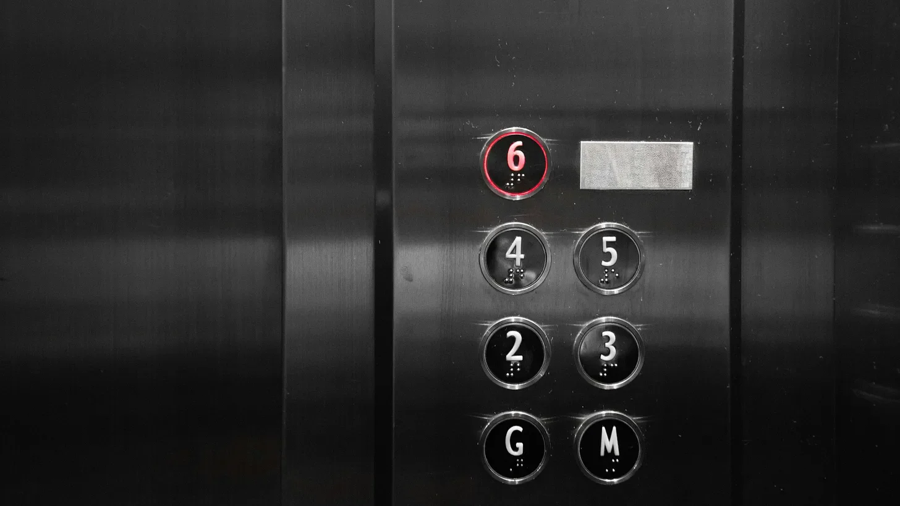

금속과 금속이 부딪히며 내는 날카로운 마찰음은 상황을 고려했을 때 적절해 보였다.
[The grinding halt of metal against metal seemed appropriate, all things considered.]
모건 첸이 리버 산토스에게 “어떤 것들은 영원할 수 없어"라고 말했을 때, 현지인들이 아직도 고집스럽게 핸콕 빌딩이라 부르는 건물의 47층과 48층 사이에서 엘리베이터가 덜컥 멈춰섰다. 형광등이 죽어가는 반딧불처럼 깜빡거리며, 리버의 얼굴에 이상한 그림자를 드리웠다 - 812일 동안 아침마다 그 옆에서 눈을 떴던 그 얼굴에.
[Morgan Chen had just told River Santos that "some things aren’t meant to last” when the elevator shuddered to a stop between the 47th and 48th floors of what locals still stubbornly called the Hancock Building. The fluorescent lights flickered like dying fireflies, casting strange shadows across River’s face – the face she’d woken up next to for eight hundred and twelve mornings.]
“씨발 농담이겠지,” 모건이 중얼거리며 제어판의 버튼들을 무작정 눌러댔다. 마치 고집스럽게 누르면 이 금속 상자가 움직일 것처럼. 디스플레이는 그들의 현재 관계 상태처럼 불안정한 상황과 딱 맞아떨어지는 숫자 ‘47'을 붉은색으로 깜빡이고 있었다.
[“You’ve got to be fucking kidding me,” Morgan muttered, pressing random buttons on the control panel as if sheer persistence might convince the metal box to move. The display blinked '47’ in angry red digits, a purgatorial number that matched their current state of relationship limbo.]
리버는 뒷벽에 기대어 서서 팔짱을 낀 채, 물리적으로 가능한 것보다 더 작은 공간을 차지하려 애쓰는 사람처럼 보였다. “적어도 추락하진 않잖아,” 그가 긍정적으로 말해보려 했지만, 그의 시도는 마치 다리 세 개 달린 고양이처럼 어설프게 착지했다.
[River leaned against the back wall, arms crossed, looking like a man trying very hard to take up less space than physics allowed. “At least we’re not falling,” he offered, his attempt at optimism landing as gracefully as a three-legged cat.]
에어컨이 쌕쌕거리며 멈췄고, 온도는 천천히 그러나 피할 수 없이 올라가기 시작했다. 모건은 칼라를 느슨하게 풀었다. 그들 사이의 팽팽한 긴장감이 감도는 3피트의 거리가 고통스럽게 의식됐다. 약 7분 전까지만 해도 아무것도 아니었을, 오히려 서로를 향한 초대였을 그 거리가 이제는 깊은 협곡처럼 느껴졌다.
[The air conditioning wheezed to a stop, and the temperature began its slow, inevitable climb. Morgan loosened her collar, painfully aware of the three feet of charged space between them. Three feet that, until approximately seven minutes ago, would have been nothing – would have been an invitation rather than a chasm.]
“어디서 읽었는데, 엘리베이터 케이블이 최대 하중의 5배를 견딜 수 있게 설계됐다더라,” 리버가 무거워지는 침묵 속에서 말했다. 그의 목소리가 '최대'라는 단어에서 살짝 갈라졌고, 모건은 모른 척했다. 그녀는 또한 리버가 불안할 때마다 마치 위키피디아 페이지가 불안 발작을 일으키듯 엉뚱한 사실들을 늘어놓곤 했다는 것도 기억하지 않는 척했다.
[River said into the thickening silence. His voice cracked slightly on 'maximum,’ and Morgan pretended not to notice. She also pretended not to remember how he always spewed random facts when nervous, like a Wikipedia page having an anxiety attack.]
비상등이 켜지며 붉은빛이 그들을 비췄고, 그 빛 아래에서 리버의 평소 따뜻한 갈색 눈동자가 거의 검은색으로 보였다. 모건은 더 이상 신경 쓰지 않기로 맹세했던 세세한 것들을 하나하나 기억해내고 있었다: 실내 암벽등반을 하다가 실패해서 생긴 그의 눈썹 위의 작은 흉터, 엘리베이터가 신음소리를 낼 때마다 그녀를 향해 움직이려 하는 그의 왼손 - 아직 사라지지 않은 오래된 보호본능.
[The emergency light kicked in, bathing them in a hellish red glow that made River’s usually warm brown eyes look almost black. Morgan found herself cataloging details she’d sworn not to notice anymore: the tiny scar above his eyebrow from their disastrous attempt at indoor rock climbing, the way his left hand twitched toward her when the elevator groaned – an old protective instinct not yet broken.]
“미술관에서 회전문에 갇혔던 거 기억나?” 모건이 스스로도 놀라며 물었다. “그때 말이야?”
[Remember the time we got stuck in that revolving door?“ Morgan asked, surprising herself. "At the art museum?”]
리버가 부드럽고 진심 어린 웃음을 터뜨렸다. “피크닉 용품을 한 칸에 다 넣을 수 있다고 네가 고집했던 그때 말이야?”
[River’s laugh came out soft and genuine. “You mean when you insisted we could fit all our picnic supplies through in one compartment?”]
“경비원이 우리를 구하러 왔을 때 그 표정이란…”
[“The security guard’s face when he had to rescue us…”]
“그리고 샴페인 병이 제일 먼저 굴러 나왔지…”
[“And the champagne bottle rolled out first…”]
그들은 위험할 정도로 친숙한 눈빛을 교환했다. 모건이 먼저 시선을 돌려 비상 대책 포스터를 바라보았다. 마치 그 포스터가 우주의 비밀을, 아니면 적어도 이 순간을 없었던 일로 만들 비밀이라도 담고 있는 것처럼.
[They shared a look that felt dangerous in its familiarity. Morgan turned away first, studying the emergency protocol poster as if it held the secrets of the universe. Or at least the secret to unhaving this moment.]
엘리베이터가 갑자기 흔들리면서 모건이 앞으로 휘청거렸다. 리버는 반사적으로 그녀를 붙잡았고, 그의 손이 그녀의 허리를 단단히 잡았다. 모든 것이 여전히 이치에 맞았던 아침 이후로 처음으로, 그들은 한순간 가까이 붙어있었다. 그의 터무니없이 고급스러운 비누 향이 났다 - 베르가못과 그녀가 한번도 정확히 알아내지 못했던 다른 향이.
[The elevator lurched suddenly, sending Morgan stumbling forward. River caught her reflexively, his hands steady on her waist. For one suspended moment, they were closer than they’d been since the morning, when everything still made sense. She could smell his ridiculous artisanal soap – bergamot and something else she’d never quite identified.]
“미안해,” 둘이 동시에 말했고, 함께 웃었다가, 곧바로 웃음을 멈췄다.
[“Sorry,” they said simultaneously, then laughed, then stopped laughing just as abruptly.]
모건은 뒤로 물러섰지만, 그 순간은 마치 고요한 공기 속의 향수처럼 여전히 남아있었다. “있잖아, 웃긴 게 뭔지 알아?” 그녀가 전혀 웃기지 않은 목소리로 말했다. “성장이랑 서로 다른 길을 가는 것에 대해서, 그런 쓸데없는 얘기들로 가득한 연설을 준비했었거든. 근데 지금은 한 마디도 기억나지 않아.”
[Morgan stepped back, but the moment lingered like perfume in still air. “You know what’s funny?” she said, not feeling funny at all. “I had this whole speech planned. About growth and paths diverging and all that bullshit. And now I can’t remember a single word of it.”]
“아마도 그게 쓸데없는 소리였기 때문이겠지,” 리버가 조용히 말했다.
[“Probably because it was bullshit,” River said quietly.]
엘리베이터가 다시 작동하기 시작했고, 일반 조명이 공간을 차갑게 비췄다. 그들은 남은 한 층을 침묵 속에서 올라갔지만, 이전과는 다른 종류의 침묵이었다 - 벽이라기보다는 물음표 같은 침묵이었다.
[The elevator hummed back to life before Morgan could respond, the regular lights flooding the space with harsh clarity. They rode the remaining floor in silence, but it was a different kind of silence than before – less like a wall and more like a question mark.]
48층에서 문이 열리자 리버가 그녀를 향해 돌아섰다. “커피 한잔 할래? 뭘 해결하자는 게 아니라. 그냥… 금속 상자가 우리를 강제하지 않는 상태에서 대화하고 싶어서.”
[As the doors opened onto the 48th floor, River turned to her. “Want to get coffee? Not to fix anything. Just to… talk without a metal box forcing us to?”]
모건은 그를 바라보았다 - 정말로 자세히 보았다 - 그리고 그녀가 계획했던 끝이 아닌 다른 무언가를 보았다. 아직 끝나지 않은 무언가를.
[Morgan looked at him – really looked at him – and saw not the ending she’d planned but something else. Something unfinished.]
“그래,” 그녀가 말했다. “커피 좋아.”
[“Yeah,” she said. “Coffee sounds good.”]